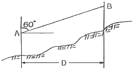
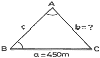
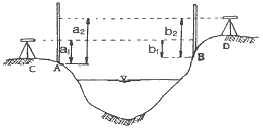
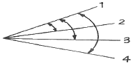
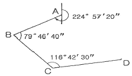
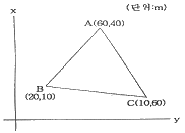
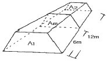

측량기능사 (2007-01-28 기출문제)
1과목: 임의 구분
1. 다음 측량장비 중 컴퓨터와 연결하여 3차원 측량을 실시 할 수 없는 측량장비는?
- 토탈스테이션 (Total station)
- GPS
- VLBI
- 덤피레벨 (dumpy level)
(정답률: 56%)

2. A점과 B점의 거리를 왕복 측량한 결과 88.53m 와 88.59m를 얻었다면, 정밀도는?
- 1/1478
- 1/3326
- 1/2952
- 1/8856
(정답률: 29%)
3. 그림과 같이 경사각이 60°, AB의 경사거리가 57.735m 일 때 수평거리 D는 얼마인가?

- 30m
- 50m
- 60m
- 70m
(정답률: 60%)
4. 토털스테이션 사용시의 주의사항으로 거리가 먼 것은?
- 측량 작업 전에는 항상 기계의 이상 여부를 점검한다.
- 기계가 지면에 직접 닿지 않도록 주의한다.
- 기계는 가능한 삼각에 분리하지 않고 이동한다.
- 기계를 직사광선이나 습기 등으로부터 보호한다.
(정답률: 90%)
5. 지반고가 50.000m 인 A점이 B.M인 고차식 야장 기입에서 후시의 합이 5.789m, 전시의 합이 3.716m 일 때 B점의 지반고는?
- 47.927m
- 52.073m
- 55.789m
- 58.175m
(정답률: 75%)
6. 평판측량의 장, 단점에 대한 설명 중 잘못된 것은?
- 오차의 발견이 쉽다
- 내업이 적다.
- 기후의 영향을 많이 받는다.
- 전체적으로 정밀도가 높다.
(정답률: 71%)
7. 다음 중 지구상의 위치를 표시하는데 주로 사용하는 좌표계가 아닌 것은?
- 평면 직각 좌표계
- 경위도 좌표계
- 4차원 직각 좌표계
- UTM 좌표계
(정답률: 63%)
8. 트래버스 측량에서 선점할 때 유의해야 할 사항에 대한 설명으로 틀린 것은?
- 지반이 견고한 장소이어야 한다.
- 세부측량에 편리해야 한다.
- 측점수는 많게 하는 것이 좋다.
- 측선의 거리는 가능한 길게 한다.
(정답률: 73%)
9. 표준길이보다 2㎝가 더 짧은 50m 짜리 테이프로 AB간 거리를 재어 보니 200m 가 되었다. 이 AB간의 실제 거리는?
- 198.92m
- 199.92m
- 200.00m
- 201.92m
(정답률: 68%)
10. 각의 종류 중 기준선을 자오선으로 하여 어느 측선까지 시계 방향으로 잰 각을 무엇이라 하는가?
- 방향각
- 천정각
- 연직각
- 방위각
(정답률: 74%)
11. 수준측량에서 중간점이 많은 경우에 편리한 야장 기입 방법은?
- 기고식
- 승강식
- 고차식
- 약식
(정답률: 74%)
12. 어떤 측선의 방위각이 250° 30′ 일 때 방위는?
- S 250° 30′ E
- S 70° 30′ E
- S 70° 30′ W
- S 250° 30′ W
(정답률: 64%)
13. 트래버스 측량의 컴퍼스법칙과 트랜싯법칙에 대한 설명 및 경거, 위거의 오차조정에 관한 설명으로 틀린 것은?
- 컴퍼스법칙은 각측량과 거리측량의 정밀도가 대략 같은 경우에 사용한다.
- 트랜싯법칙은 각측선의 길이에 비례하여 조정한다.
- 컴퍼스법칙은 각측선의 길이에 비례하여 조정한다.
- 트랜싯법칙은 거리측량보다 각측량 정밀도가 높을 때 사용한다.
(정답률: 49%)
14. 트래버스 측량에서 어떤 두 점의 위치관계를 구하기 위해 일반적으로 사용되는 좌표는?
- 구면좌표
- 극좌표
- UTM 좌표
- 평면직각좌표
(정답률: 75%)
15. 평판 측량에서 측량 구역의 중앙부에 장애물이 많고 측량 지역이 좁고 긴 경우에 적합한 방법은?
- 방사법
- 대각선법
- 전진법
- 수선법
(정답률: 69%)
16. 삼각측량에서 기선 a = 450m 일 때 변 b의 길이는? (단, ∠A = 42° 33′ 44″ ,∠B = 86° 24′ 22″)

- 304.975m
- 304.988m
- 663.975m
- 663.988m
(정답률: 26%)
17. 『삼각망 중의 임의의 한 변의 길이는 계산해 가는 순서와는 관계없이 같은 값을 갖는다.』는 것은 삼각망의 기하학적 조건 중 어느 것에 해당하는가?
- 변조건
- 측점조건
- 각조건
- 다항조건
(정답률: 74%)
18. 300m의 기선을 50m의 줄자로 6회로 나누어 측정할 때 줄자의 1회 측정의 확률오차가 ±0.02m 라면 이 측정의 확률 오차는 얼마인가?
- ±0.04m
- ±0.⑤m
- ±0.06m
- ±0.07m
(정답률: 49%)
19. 교호 수준 측량을 하여 다음과 같은 결과를 얻었다. 이때 B점의 표고는? (단, A점의 표고는 50m 이고, a2= 1.87m, b2= 1.24m, a1= 0.74m, b1= 0.07m)

- 49.35m
- 49.⑤m
- 50.85m
- 50.65m
(정답률: 38%)
20. 그림과 같이 각을 관측하는 방법은?

- 단측법
- 배각법
- 각관측법
- 방향각법
(정답률: 82%)
2과목: 임의 구분
21. 거리가 3㎞ 떨어진 두 점의 각 관측에서 측각오차가 5″ 발생했을 때 위치 오차는 몇 ㎝ 인가?
- 0.0727㎝
- 0.727㎝
- 7.27㎝
- 72.7㎝
(정답률: 30%)
22. 트래버스 측량에서 외업을 실시한 결과, 측선의 방위각이 339° 54′ 일 때 방위는?
- N 339° 54′ W
- N 69° 54′ E
- N 20° 06′ W
- N 159° 54′ E
(정답률: 47%)
23. 변장만을 측량하여 좌표와 각을 구할 수 있는 측량 방법을 무엇이라 하는가?
- 트래버스 측량
- 삼각망 측량
- 지거 측량
- 삼변 측량
(정답률: 64%)
24. 측량에 관한 설명으로 옳지 않은 것은?
- 측량이란, 지구 표면상 등에 있는 모든 점들의 상대적 위치를 측정하는 작업이다.
- 측량지역의 현장답사, 실측작업 등을 외업이라 한다.
- 측량 외업의 자료를 얻어 지도를 작성, 필요한 값의 계산 등을 하는 작업을 내업이라 한다.
- 우리나라의 측량원점 중 동부원점의 경도와 위도는 동경 126° 북위 36° 이다.
(정답률: 63%)
25. 트래버스 측량에서 정확도가 가장 좋은 방법은?
- 개방 트래버스
- 결합 트래버스
- 폐합 트래버스
- 수준 트래버스
(정답률: 78%)
26. 트래버스 측량의 순서로 옳은 것은?
- 측량계획 및 답사 → 방위각 관측 → 선점 및 표지설치 → 계산 및 조정 → 수평각 및 거리 관측 → 측점 전개
- 측량계획 및 답사 → 선점 및 표지설치 → 방위각 관측 → 수평각 및 거리 관측 → 계산 및 조정 → 측점 전개
- 선점 및 표지설치 → 방위각 관측 → 측량계획 및 답사 → 계산 및 조정 → 측점 전개 → 수평각 및 거리 관측
- 선점 및 표지설치 → 측량계획 및 답사 → 방위각 관측 → 계산 및 조정 → 측점 전개 → 수평각 및 거리 관측
(정답률: 75%)
27. 수준 측량시에 발생할 수 있는 오차의 원인 중 기계적 원인이 아닌 것은?
- 표척 눈금이 불완전하다.
- 표척을 정확히 수직으로 세우지 않았다.
- 레벨의 조정이 불완전하다.
- 표척 이음매 부분이 정확하지 않다.
(정답률: 63%)
28. 삼각점의 선점에 관한 설명 중 틀린 것은?
- 삼각점의 선점은 측량의 목적, 정확도 등을 고려하여 실시한다.
- 삼각점은 오래 보존하는 일이 많고 정확한 관측을 필요로 하므로 지반이 견고하여야 하고 침하 및 동결 지반은 피한다.
- 삼각형 내각의 크기는 30 ~ 120° 가 되게 한다.
- 삼각형은 가능한 직삼각형에 가깝도록 한다.
(정답률: 73%)
29. 그림과 같은 다각형을 교각법으로 측정한 결과 CD 측선의 방위각은?

- 61° 26′ 30″
- 61° 27′ 30″
- 60° 26′ 27″
- 60° 27′ 27″
(정답률: 31%)
30. 삼각측량의 주목적은 무엇을 하기 위한 것인가?
- 삼각점의 위치를 결정하기 위한 것
- 변의 길이를 산출하기 위한 것
- 삼각형의 면적을 산출하기 위한 것
- 기타 측량의 수준점을 확보하기 위한 것
(정답률: 57%)
31. 지형측량에서 얻은 결과를 일정한 축척과 도식으로 도지위에 나타낸 것은 어느 것인가?
- 단면도
- 상세도
- 지형도
- 모형도
(정답률: 65%)
32. 어느 대상물을 촬영고도 H = 3000m에서 촬영하여 주점기선 길이 b = 10㎝ , 시차차 ∆p = 2㎜ 일 때 이 대상물의 고도(h)는?
- 약 19m
- 약 29m
- 약 59m
- 약 69m
(정답률: 25%)
33. 곡선 부분으로 둘러 쌓인 면적을 계산할 때, 지거를 같은 간격으로 잡고 두 구간을 한 조로 하여 면적을 구하는 방법은?
- 삼사법
- 모눈종이법
- 심프슨 제1법칙
- 심스픈 제2법칙
(정답률: 44%)
34. 사진측량에서 사진면과 같은 어떤 투영면의 중심을 좌표원점으로 생각할 때, 관측 위치의 변동에 따른 좌우 투영면상에서의 상좌표의 차이를 무엇이라 하는가?
- 누차
- 잔차
- 우차
- 시차
(정답률: 38%)
35. 그림과 같은 트래버스의 면적을 좌표법으로 구하면?

- 1⑤0m2
- 1150m2
- 1250m2
- 1350m2
(정답률: 45%)
36. 다음 그림과 같은 각주의 양단면적 A1= 2.4m2, A2= 2.0m2, 중앙단면적 Am= 2.2m2 이고 길이 L = 12m 일 때 각주 공식에 의한 체적은?

- V = 20.73m3
- V = 22.6m3
- V = 24.8m3
- V = 26.4m3
(정답률: 37%)
37. 공통접선의 반대쪽에 중심이 있고 반지름이 같거나 서로 다른 원호인 곡선은 무엇인가?
- 배향곡선
- 반향곡선
- 복심곡선
- 단곡선
(정답률: 59%)
38. 항공사진 촬영 시 산악지 및 고층건물이 밀집한 시가지의 중복도를 10 ~ 20%이상 높이는 이유는?
- 수차를 없애기 위함이다.
- 고차를 없애기 위함이다.
- 높이의 정밀도를 높게 하려 함이다.
- 사각 부분을 없애기 위함이다.
(정답률: 29%)
39. 노선을 선정할 때 유의해야 할 사항이 아닌 것은?
- 노선은 가능한 직선으로 하고 경사를 완만하게 한다.
- 절토량과 성토량의 균형을 이루게 한다.
- 토공량이 적고 절토 및 성토의 운반 거리를 길게 한다.
- 배수가 잘 되는 곳이어야 한다.
(정답률: 93%)
40. A점의 표고가 125m, B점의 표고가 35m 일 때 10m 간격의 등고선은 몇 개가 들어가는가?
- 7개
- 8개
- 9개
- 10개
(정답률: 61%)
3과목: 임의 구분
41. 교각 I = 90°, 곡선반경 R = 200m 일 때 접선길이 (T.L) 는?
- 100m
- 120m
- 150m
- 200m
(정답률: 48%)
42. 등고선의 성질에 관한 사항 중 옳지 않은 것은?
- 동일 등고선 상에 있는 각 점은 모두 같은 높이이다.
- 동굴이나 절벽은 반드시 두 점에서 교차한다.
- 지도의 도면 내에서 등고선이 폐합되는 경우, 산정이나 분지를 나타낸다.
- 등고선은 도면 안이나, 밖에서 폐합하지 않을 수 있다.
(정답률: 53%)
43. GPS 수신기 오차에서 수신기 채널 잡음의 해결 방법으로 가장 알맞은 것은?
- 높은 건물에 근접하여 관측한다.
- 배터리를 교체한다.
- 검증과정을 통해 보정 하거나 노후에 의한 것일 때는 교체한다.
- 수신 위성의 수를 1대로 최소화한다.
(정답률: 80%)
44. 지표면에서 높은 곳의 꼭대기를 연결한 선으로, 빗물이 이것을 경계로 흐르게 되는 지성선은?
- 합수선
- 계곡선
- 능선
- 경사변환선
(정답률: 58%)
45. 클로소이드 곡선에서 곡률 반지름 R = 100m , 곡선길이 L = 36m 일 때 클로소이드 매개변수 A의 값은?
- 50m
- 60m
- 80m
- 100m
(정답률: 64%)
46. 인공 위성을 이용한 범세계적 위치 결정의 체계로 정확히 위치를 알고 있는 위성에서 발사한 전파를 수신하여 관측점까지의 소요시간을 측정함으로써 관측점의 3차원 위치를 구하는 측량은?
- 전자파 거리측량
- 원격탐측
- GPS 측량
- 스타디아 측량
(정답률: 79%)
47. 기존의 도면을 이용하여 자료를 입력하는 방법으로 어느 정도 훼손된 도면도 입력이 가능하며 불필요한 속성, 주기는 선택하여 입력하지 않을 수 있는 것은?
- 디지타이저
- 스캐너
- GPS
- 위성영상
(정답률: 55%)
48. 지형공간정보체계에서 구성 요소로 거리가 먼 것은?
- 자료
- 하드웨어와 소프트웨어
- 조직과 인력
- 운영 자금
(정답률: 56%)
49. GPS를 이용하여 시간의 오차도 미지수로 포함한 3차원 위치를 결정하는 방법은 몇 대의 위성이 필요한가?
- 1대
- 2대
- 3대
- 4대
(정답률: 63%)
50. 다음 중 사진측량의 일반적인 특징이 아닌 것은?
- 접근이 곤란한 지역의 대상물 측량이 가능하다.
- 축척 변경이 불가능하다.
- 촬영을 위한 시설과 비용이 많이 든다.
- 대상물의 정보가 영상자료에 의해 보존 및 이용이 가능하다.
(정답률: 56%)
51. 다음 일반측량 중 공공측량으로 지정할 수 없는 것은?
- 촬영지역의 면적이 1km2 이상인 측량용 사진의 촬영
- 측량실시 지역의 면적이 1km2 이상인 지형측량
- 측량노선의 길이가 5㎞ 이상인 수준측량
- 국토지리정보원장이 발행하는 지도의 축척과 동일한 축척의 지도제작
(정답률: 46%)
52. 건설교통부장관은 공공측량의 계획기관에 대하여 공공측량의 장기계획서 또는 년간 계획서의 제출을 요구할 수 있는데 그 목적으로 가장 타당한 것은?
- 공공측량의 현황을 파악하기 위하여
- 공공측량의 정확을 기하고 중복을 피하기 위하여
- 작업 완료 후 성과를 고시하기 위하여
- 지형 지물의 변동사항을 확인하기 위하여
(정답률: 59%)
53. 기본측량의 실시공고는 일간신문에 게재하거나 또는 시ㆍ도의 게시판에 최소 며칠 이상 게시하는 방법으로 하는가?
- 3일
- 5일
- 7일
- 15일
(정답률: 54%)
54. 다음 사항 중 측량업의 등록취소 사유가 아닌 것은?
- 다른 사람에게 자기의 등록증 또는 등록수업을 대여한 때
- 허위 기타 부정한 방법으로 측량업의 등록을 한 때
- 측량업자가 사망하거나 법인인 경우에는 당해 법인이 파산된 때
- 영업의 정지처분에 위반한 때
(정답률: 42%)
55. 정당한 사유 없이 측량의 실시를 방해한 자의 벌칙은?
- 200만원 이하의 과태료
- 200만원 이하의 벌금
- 1년 이하의 징역 또는 1000만원 이하의 벌금
- 2년 이하의 징역 또는 2000만원 이하의 벌금
(정답률: 28%)
56. 중앙지명 위원회의 위원은 위원장, 부위원장을 포함하여 몇 인 이내의 위원으로 구성하는가?
- 7인
- 13인
- 15인
- 20인
(정답률: 56%)
57. 1등 수준점 표주의 정면에 쓰이는 것은?
- 건설교통부
- 년도
- 수준점
- 1등
(정답률: 50%)
58. 측량법의 제정 목적으로 가장 타당한 것은?
- 측량에 관한 중요사항에 관하여 국토지리정보원장의 자문을 받아 측량의 기준과 범위를 정하기 위하여
- 측량성과로서 조제하는 지도와 도식의 발간 및 교부로 수수료 징수 및 해외반출을 막기 위하여
- 측량기술사 및 측량업자의 품위 보존과 권익을 보호할 측량제도의 건전한 발전을 위하여
- 측량에 관한 기준을 정하여 측량의 정확성을 확보함으로써 측량제도의 발전을 도모하기 위하여
(정답률: 57%)
59. 기본측량을 위하여 설치된 측량표의 관리는?
- 건설교통부장관이 한다.
- 관할시장, 군수가 한다.
- 국토지리정보원장이 한다.
- 관할 도지사가 한다.
(정답률: 54%)
60. 기본측량성과의 고시 내용 중 필수적 사항이 아닌 것은?
- 측량실시의 시기
- 측량성과의 보관장소
- 측량작업기관
- 측량실시의 지역
(정답률: 14%)